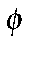

Detailed Description of Lewis Structure.
- Calculation of Connectivity
-
Hydrogen atoms are monovalent. Because of this, they can only bond to one other atom. Therefore, the first set of bonds formed are the X-H s bonds. The criterion used is that each hydrogen atom is connected to the atom nearest to it, except that a hydrogen atom is not allowed to be bonded to another hydrogen atom. -
The connectivity of all other atoms is determined. Atoms are considered as being connected (bonded together) if the interatomic distance is less than 110% of the sum of their Van der Waals radii.
-
Any bridging hydrogen bonds are identified. These usually indicate a faulty geometry. If any are present, then the SCF calculation will not be run, unless LET is present.
-
Any user-defined chemical bonds are identified. This is useful in cases where a Lewis structure could not otherwise be created.
-
- s-framework
This is the simplest set of bonds to identify. A s bond exists for every pair of atoms that are connected. The number of s bonds is equal to the number of connections in the system. For water, this would be 3; for benzene, 12; and for ethylene, 5.Each time a bond is formed, the number of available atomic orbitals on the atoms involved is decremented by 1 and the number of available electrons is decremented by 1. For example, before the s framework of ammonia is formed, the number of available orbitals on nitrogen is 4 and the number of electrons is 5. After the s bonds are formed, there is 1 orbital and 2 electrons left.
- Lone pairs
The next set of Lewis elements formed are the lone pairs. The rule used here is that if there are more electrons than orbitals on an atom, the extra electrons are used in the construction of lone pairs. Each lone pair uses up two electrons and one orbital. Thus, one lone pair would be assigned to the nitrogen in ammonia, two lone pairs would be assigned to oxygen in water, and three lone pairs would be assigned to chlorine in HCl.The lone pairs could only assigned after the s bonds were created. If they were assigned before the s bonds, then some ionic systems, such as NH4, could not be represented.
- Open-ended p-bonds
Once the lone pairs are assigned, the number of unused atomic orbitals on an atom will be equal to the number of unused electrons on that atom. These unused orbitals are then available for forming multiple bonds between atoms. If two atoms, that are s bonded together, both have unused orbitals, then they can form a p bond.The order in which p bonds are generated is important. If in styrene, for example, a p bond is assigned to the ring-C1 as in Figure 1, A, then when the remaining double bonds are created, there are two unused atomic orbitals on atoms that are not bonded together. In order for a Lewis structure to be generated, two electrons are put into one of these unused orbitals, creating an anionic center, and no electrons are put into the other orbital, making it a cationic center.
-
A better choice is to identify open-ended p systems, and to assign these first, option B in Figure 1.
-
The order in which the p bonds are assigned in an open-ended p system is important. In the case of a simple conjugated polyene, the order is simple - the carbon atom that has only one atom p bonding to it is identified. A p bond is constructed between the two atoms. This is repeated until all p bonds in the polyene are identified.
-
Problems arise in more complicated systems, such as buta-1,3-diyne. If the simple rule just described is used, then a zwitterionic cumulated polyene results, Figure 2 A, instead of a diyne, Figure 2 B.
-
-
Also, if both ends of the olefinic group are connected to aromatic rings, as in stilbene, then identification of the olefin group is not obvious.
-
To allow for this, the following two rules are used:
- 1. Where there is the possibility of forming a triple bond, do so.
- 2. When a delocalized p system is opened, the p bond formed should involve atoms that are p bonded to exactly two other atoms.
In the case of stilbene (

-CH=CH- ), this prevents a
p bond forming between the ring and a carbon atom of the olefin.
), this prevents a
p bond forming between the ring and a carbon atom of the olefin. -
Whenever a delocalized p system is encountered, as soon as a p bond is formed and the delocalization destroyed, then the rest of the p system is treated as a simple conjugated polyene. This ensures that the maximum number of p bonds is formed, and prevents unconnected p bonds from being created. Thus benzene would have the three p bonds: C1-C2, C3-C4, and C5-C6, and not the quinoidal C1-C2and C4-C5 bonds.
To allow compounds that contain several fused delocalized p -systems, such as the higher buckyballs (specifically, C960) to be modeled, two extra rules are needed. These rules can be regarded as minor qualifications to the earlier rules:
- 1. If any atoms attached to an open-ended p system belong to a delocalized p system, then when delocalized p systems are opened, the opening is done using these atoms.
- 2. If a five-membered pring is attached to another delocalized p system, then when the p system is opened, at least one atom must be in the other delocalized system.
The effect of the first rule is that as soon as a graphitic network is encountered, all the p bonds in the network are assigned in one pass. Without this rule, individual parts of the network could be assigned separately, and at the junctions of the various domains, the potential for isolated p orbitals exists. This would lead to charges that would cause severe problems with the SCF calculation.
For extended graphite-like systems, two more rules are needed. These are: 1
1. If a six-membered ring has two p bonds already, then add a third p bond to make it an aromatic ring.
2. If a six-membered ring has one p bond, then add another p bond to the same ring, so that the previous rule can be used.
The effect of these rules is that when a graphitic lattice is encountered, all the atoms in the lattice will be assigned in such a way as to maximize the number of aromatic rings. An example of such a system is provided by the large icosahedral fullerene C1500. A facet of this system is shown in Figure 3.
Remaining unused atomic orbitals All that remains is to identify any unused electrons and orbitals and to assign them to either the occupied or virtual sets. A general set of rules applies to all elements except carbon. For carbon, the rules are as follows:Rules for carbon: If there are two unused valence electrons, then the atom will be neutral (a carbene, for example). Otherwise, if the first or second nearest neighboring atom is of Group 6, then the atom is assigned a negative charge; if the first or second nearest neighboring atom is of Group 5, then the atom is assigned a positive charge. If the charge is still not determined, then the assignment of charge is deferred until all other atoms have been assigned. At that point, the charge is assigned as either +1 or -1, depending on the calculated charge on the system and the charge supplied by the data set. The charges are assigned so that the calculated charge equals the supplied charge.
General rules for all other elements:
First, the oxidation state is determined. This is the sum of the calculated formal charge (if any) plus the number of bonds times -1 if the element is normally electronegative . For oxygen in CH3-O this would be 0 (from the current charge on oxygen) plus the number of bonds (here 1, to the carbon atom) times -1. This would give the formal oxidation state of minus one. If the calculated valence is less than that expected for a normal-valent system, a hypervalent valency will be tried.
Then the calculated oxidation state (in CH3-O this would be -1 ) is compared with that expected (for oxygen, -2). If they are different, then electrons are added or removed as necessary to match the expected oxidation state. For the CH3-O system, one electron is added to give [CH3-O]-.
All remaining electrons are used in making lone pairs.
If there are any unused orbitals, they are used in making virtual lone pairs.
Only limited hypervalent states are allowed. For chlorine, these are 1 and 3, for iodine: 1, 3, and 7. The most popular states are used. Only those oxidation states that can result in closed shells are allowed, so Cr is Cr(II), Cr(III) is not allowed, nor is Fe(III).
Limitations or examples of difficult systems include:
Chlorate ion, [ClO3]- chlorine forms three sigma bonds with the oxygen atoms, so its valency is +3. The first hypervalent state of chlorine is Cl(III), so this is used. Each oxygen has an oxidation state of -1, and therefore is given an extra electron to equal the expected oxidation state of -2. At this point, the calculated total charge is -3. In order to get the correct charge of -1, an artificial bond needs to be created between two of the oxygen atoms. There is no way to by-pass Cl(III) and use the correct Cl(V).
A very difficult set is: NH3, [NH4]+, [PCl4]+, [PCl4]-, PF5, [PF6]-.
Another difficult set is NH3, CH2=CH-NH-CH=CH2, pyridinium ([C5H6N]+) In this set, the charge on the nitrogen only becomes obvious when the distant atoms are known.
N-methyl 4 hydroxy pyridine (Me-NC5H4-O): Should this hypothetical system have a Zwitterion or the benzoquinone-like structure?
Should the benzoquinone structure be charged (as in the di-anion of hydroquinone) or uncharged (as in benzoquinone).
These few examples illustrate the difficulty of writing rules for generating Lewis structures for all possible organic systems. In an attempt to resolve ambiguities, the option exists to assign charges to individual atoms.
Related key-words: LEWIS,
CVB, METAL, VDWM,
CHARGE, CHARGES, SETPI, and MOZYME
See also:
MOZYME introduction